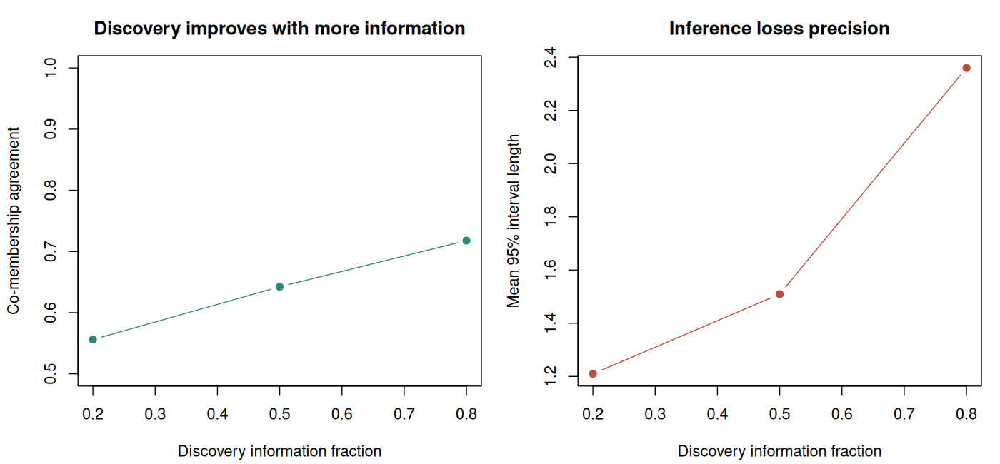

14. Research synthesis: assumptions, validation, and independent information#
Learning objectives#
By the end of this chapter, you should be able to turn a course method into a focused research question, design a sensitivity study that targets its assumptions, separate several kinds of statistical guarantee, and implement Gaussian data thinning as an independent-information validation strategy.
A successful course project does not require a new theorem or training a large language model. It requires a clearly stated problem, a defensible method, a reproducible comparison, and an explanation of what the evidence establishes.
14.1 Start with the target and the observation mechanism#
The course has considered several ways in which an ordinary supervised-learning problem changes:
Setting |
Available information |
Main question to resolve |
|---|---|---|
Positive–unlabelled learning |
Some positive examples and an unlabelled sample |
Which labelling mechanism and class prior identify risk? |
Unlabelled–unlabelled learning |
Two mixtures with different class proportions |
Are the shared components identifiable, and is inversion stable? |
Preference learning |
Comparisons, possibly repeated within prompts or people |
What preference parameter is identified by this comparison design? |
Online learning |
Sequentially revealed losses or rewards |
Which comparator and feedback model define regret? |
Selective inference |
A hypothesis chosen using observations |
Which selection event and sampling model justify error control? |
The same report template works across these settings: target, observed data, assumptions, estimator or decision rule, guarantee, and failure mode. Their guarantees remain different. Small excess prediction risk, small regret, a calibrated confidence interval, and a valid selected-hypothesis test cannot be ranked by a single shared metric.
14.2 A focused extension: independent information for the same units#
In post-clustering inference, row splitting can leave the group assignment dependent on the feature being tested. An alternative is to split each observation into statistically independent information components while keeping the observation’s identity.
Neufeld, Dharamshi, Gao, and Witten (2024) develop data thinning for convolution-closed distributions. We study the Gaussian case because its assumptions and derivation are transparent.
Let
with known \(\sigma\). For a discovery-information fraction \(\tau\in(0,1)\), form
These components sum to \(X\). Their means are \(\tau\mu\) and \((1-\tau)\mu\), and their variances are \(\tau\sigma^2I_n\) and \((1-\tau)\sigma^2I_n\). Their covariance is
Because \((A,B)\) is jointly Gaussian, zero covariance establishes independence.
Normalize the components to preserve the original means:
Then \(X^D\) and \(X^I\) are independent, both have mean \(\mu\), and their variances are \(\sigma^2/\tau\) and \(\sigma^2/(1-\tau)\). Larger \(\tau\) improves discovery precision while making inference noisier. Independent normal noise is added featurewise for the spherical multivariate model.
Example 14.1 — An equal information split
With \(\tau=1/2\), the normalized components are \(X^D=X+E\) and \(X^I=X-E\). Both have variance \(2\sigma^2I_n\), their covariance is zero, and their average is \(X\).
They are independent under the joint repeated-sampling model for \((X,E)\). They are not independent conditional on the original \(X\), because their sum is then fixed. The validation argument conditions on discovery information, not on every variable generated during the construction.
14.3 Inference conditional on the discovered groups#
Cluster the rows of \(X^D\) and obtain groups \(C_1,C_2\). Conditional on all discovery information, these index sets are fixed and \(X^I\) retains its Gaussian law. For one feature, the target is
and the estimator uses the corresponding means of \(X^I\). Its conditional variance is
Therefore \(\widehat\delta_C\pm z_{0.975}\sqrt{v_C}\) has conditional 95% coverage for this selected target under the stated model. The discovery algorithm can be complicated because its information is independent of the inference component. Any further decision based on \(X^I\) requires its own accounting.
The target still depends on the discovered groups. A good confidence procedure does not ensure those groups match a scientifically meaningful population partition. This is why the laboratory reports grouping agreement and interval coverage separately.
14.4 A sensitivity study must challenge an assumption#
The independence construction uses the true noise scale. Suppose instead that the injected noise has variance \(s^2I_n\) while the original observation variance remains \(\sigma^2I_n\). The normalized components have covariance
The cancellation fails when \(s\neq\sigma\). Substituting an estimate into both the randomization and the interval formula therefore requires further theory; the known-variance derivation does not automatically apply.
Example 14.2 — Reproducibility is not a validity guarantee
Suppose the true standard deviation is one, but the procedure uses \(s=0.7\). Then \(\operatorname{Cov}(X^D,X^I)=0.51I_n\). The discovery and inference components remain dependent. Using the same random seed on every computer will reproduce that dependence exactly.
A useful project reruns the null experiment at \(s/\sigma\in\{0.7,1,1.3\}\) and reports the change in false rejection, including Monte Carlo uncertainty. It treats the misspecified cases as stress tests, not as cases covered by the exact theorem.
This is a more informative extension than changing an arbitrary tuning parameter without explaining its role. In UU learning, a comparable study changes the gap between mixture priors; in preference learning, it changes comparison-graph connectivity or within-prompt dependence; in online learning, it changes stationarity or the feedback available to the learner.
14.5 Design a small but interpretable experiment#
Use one main question and a short sequence of experiments:
Reproduction: implement or reproduce a central result under its stated assumptions.
Controlled change: vary one assumption or resource constraint and keep the rest fixed.
Matched comparison: use the same simulated datasets or random-number streams when comparing methods.
Uncertainty: report Monte Carlo standard errors or uncertainty across independent repetitions.
Interpretation: explain which part of the theoretical argument survives the change.
For a rejection rate \(\widehat p\) from \(B\) independent repetitions, the approximate Monte Carlo standard error is \(\{\widehat p(1-\widehat p)/B\}^{1/2}\). With \(B=400\) and a true rate near \(0.05\), this is about \(0.011\). A difference of one percentage point cannot be interpreted confidently from that experiment alone.
When comparing two procedures on the same replicates, use the replicate-wise difference rather than treating two estimated rates as independent. Record computational failures separately. Removing failed runs without disclosure changes the evaluated procedure and can hide instability.
14.6 What the final project should contain#
The proposal should identify the target, a small set of assumptions, one baseline, and one planned modification. The reproduction checkpoint should show that the baseline works in a setting where its behaviour is understood. The final report should contain the mathematical setup, methods, experiment design, primary results, limitations, and instructions to regenerate the results.
Reusing an assignment implementation is appropriate when the report identifies what is reused and adds a new question or comparison. For example, extend the PU assignment by deliberately violating constant positive-labelling probability, or extend the clustering assignment by varying the discovery-information fraction. Comparing increasingly complicated methods without a fixed target is not a substitute for a research question.
Maintain a source record for data, a fixed seed strategy, software versions, the exact analysis script, and a description of the independent sampling unit. Repeated ratings from one prompt or annotator must not be counted as independent observations merely because they occupy separate rows.
14.7 Reproducible R laboratory#
The base-R script studies Gaussian thinning at three discovery fractions. It reports null rejection, selected-target interval coverage, interval length, estimation error, and a separate co-membership agreement measure under a simulated mean structure. It then challenges the known-noise assumption.
The intervals target the means of the discovered index sets. The script computes those targets from the simulated \(\mu_i\) rather than substituting the original generating group centres. All numerical results are produced by the downloadable script.
Code
# Chapter 14: Gaussian data thinning and sensitivity. Base R only.
set.seed(2026102114)
options(width = 145)
n <- 60L
q <- 2L
B <- 400L
sigma <- 1
taus <- c(0.2, 0.5, 0.8)
reference_groups <- rep(1:2, each = n / 2L)
noise <- lapply(seq_len(B), function(b) matrix(rnorm(n * q), n, q))
randomization <- lapply(seq_len(B), function(b) matrix(rnorm(n * q), n, q))
pair_agreement <- function(a, b) {
keep <- upper.tri(matrix(FALSE, length(a), length(a)))
mean((outer(a, a, "==") == outer(b, b, "=="))[keep])
}
one_run <- function(mu, z, e, tau, assumed_sigma = 1) {
x <- mu + sigma * z
discovery <- x + sqrt((1 - tau) / tau) * assumed_sigma * e
inference <- x - sqrt(tau / (1 - tau)) * assumed_sigma * e
groups <- cutree(hclust(dist(discovery), method = "ward.D2"), k = 2L)
# Fix label orientation using discovery information only.
if (mean(discovery[groups == 1L, 1L]) >
mean(discovery[groups == 2L, 1L])) groups <- 3L - groups
left <- groups == 1L
estimate <- mean(inference[!left, 1L]) - mean(inference[left, 1L])
target <- mean(mu[!left, 1L]) - mean(mu[left, 1L])
standard_error <- assumed_sigma / sqrt(1 - tau) *
sqrt(1 / sum(left) + 1 / sum(!left))
half_width <- qnorm(0.975) * standard_error
c(covered = abs(estimate - target) <= half_width,
length = 2 * half_width, squared_error = (estimate - target)^2,
reject_zero = abs(estimate) > half_width,
agreement = pair_agreement(groups, reference_groups))
}
mu_null <- matrix(0, n, q)
mu_separated <- mu_null
mu_separated[, 1L] <- rep(c(-1.25, 1.25), each = n / 2L)
summaries <- list()
counter <- 1L
for (scenario in c("Global null", "Separated means")) {
mu <- if (scenario == "Global null") mu_null else mu_separated
for (tau in taus) {
values <- vapply(seq_len(B), function(b)
one_run(mu, noise[[b]], randomization[[b]], tau), numeric(5L))
coverage <- mean(values["covered", ])
summaries[[counter]] <- data.frame(
scenario = scenario, discovery_fraction = tau,
coverage = coverage,
coverage_mcse = sqrt(coverage * (1 - coverage) / B),
mean_interval_length = mean(values["length", ]),
rmse_for_selected_target = sqrt(mean(values["squared_error", ])),
null_rejection = if (scenario == "Global null")
mean(values["reject_zero", ]) else NA_real_,
grouping_agreement = if (scenario == "Separated means")
mean(values["agreement", ]) else NA_real_
)
counter <- counter + 1L
}
}
cat("Known sigma = 1; Ward discovery clustering; inference feature = 1\n")
cat("Coverage target: the actual selected groups' average underlying means.\n")
display_table <- do.call(rbind, summaries)
names(display_table) <- c("scenario", "tau", "coverage", "coverage_mcse",
"mean_CI_length", "selected_RMSE",
"null_rejection", "group_agreement")
print(display_table, row.names = FALSE, digits = 4)
cat("NA entries mark quantities deliberately not interpreted in that scenario.\n")
scales <- c(0.7, 1, 1.3)
sensitivity <- lapply(scales, function(assumed_sigma) {
values <- vapply(seq_len(B), function(b)
one_run(mu_null, noise[[b]], randomization[[b]],
tau = 0.5, assumed_sigma = assumed_sigma), numeric(5L))
rate <- mean(values["reject_zero", ])
data.frame(
assumed_sigma = assumed_sigma,
component_covariance = sigma^2 - assumed_sigma^2,
null_rejection = rate,
monte_carlo_se = sqrt(rate * (1 - rate) / B)
)
})
cat("\nScale sensitivity at discovery fraction 0.5; true sigma remains 1\n")
print(do.call(rbind, sensitivity), row.names = FALSE, digits = 4)
cat("Only assumed_sigma = 1 is covered by the independence derivation.\n")
plot_dir <- Sys.getenv("COURSE_FIGURE_DIR", unset = "")
if (nzchar(plot_dir)) {
dir.create(plot_dir, recursive = TRUE, showWarnings = FALSE)
tab <- do.call(rbind, summaries)
selected <- tab[tab$scenario == "Separated means", ]
png(file.path(plot_dir, "14-research-synthesis.png"),
width = 1400, height = 650, res = 130)
old_par <- par(mfrow = c(1, 2), mar = c(4.2, 4.2, 3, 1))
plot(selected$discovery_fraction, selected$grouping_agreement,
type = "b", pch = 19, col = "#2a8a7c", ylim = c(0.5, 1),
xlab = "Discovery information fraction", ylab = "Co-membership agreement",
main = "Discovery improves with more information")
plot(selected$discovery_fraction, selected$mean_interval_length,
type = "b", pch = 19, col = "#bd4b38",
xlab = "Discovery information fraction", ylab = "Mean 95% interval length",
main = "Inference loses precision")
par(old_par)
invisible(dev.off())
}
Computed output#
Output
Known sigma = 1; Ward discovery clustering; inference feature = 1
Coverage target: the actual selected groups' average underlying means.
scenario tau coverage coverage_mcse mean_CI_length selected_RMSE null_rejection group_agreement
Global null 0.2 0.9675 0.008866 1.203 0.2899 0.0325 NA
Global null 0.5 0.9400 0.011874 1.536 0.3844 0.0600 NA
Global null 0.8 0.9475 0.011152 2.429 0.6389 0.0525 NA
Separated means 0.2 0.9625 0.009499 1.210 0.2992 NA 0.5560
Separated means 0.5 0.9700 0.008529 1.510 0.3592 NA 0.6423
Separated means 0.8 0.9600 0.009798 2.360 0.5772 NA 0.7178
NA entries mark quantities deliberately not interpreted in that scenario.
Scale sensitivity at discovery fraction 0.5; true sigma remains 1
assumed_sigma component_covariance null_rejection monte_carlo_se
0.7 0.51 0.4575 0.02491
1.0 0.00 0.0600 0.01187
1.3 -0.69 0.1425 0.01748
Only assumed_sigma = 1 is covered by the independence derivation.


Exercises#
Exercise 14.1. Derive the means, variances, and covariance of \(A\) and \(B\). Which step requires Gaussianity to conclude independence?
Exercise 14.2. With fixed discovered groups, derive the variance of \(\widehat\delta_C\). What happens to inference precision as \(\tau\) approaches one?
Exercise 14.3. Explain why coverage must be evaluated against \(\delta_C\) rather than the difference between the two generating population centres when recovery is imperfect.
Exercise 14.4. Choose one earlier course module and write a five-sentence project specification: target, observation mechanism, baseline, assumption to challenge, and main evaluation measure.
Solutions#
Solution to Exercise 14.1
Linearity gives the stated means. Independence of \(X\) and \(E\) gives \(\operatorname{Var}(A)=\tau^2\sigma^2I+\tau(1-\tau)\sigma^2I=\tau\sigma^2I\), with the analogous expression for \(B\). The cross-covariance terms cancel. Zero covariance alone is insufficient in general; joint Gaussianity converts it into independence.
Solution to Exercise 14.2
Each inference observation has variance \(\sigma^2/(1-\tau)\) and the two group averages involve disjoint independent rows. Adding their variances gives \(v_C\). As \(\tau\) approaches one, this variance diverges for fixed group sizes. Better discovery can therefore be accompanied by much wider intervals.
Solution to Exercise 14.3
The test and interval use the estimated index sets. If they mix generating populations, the corresponding averages of \(\mu_i\) are mixtures of the generating centres, and their difference can be much smaller. Scoring the interval against another target confounds inference error with clustering recovery and does not evaluate the stated coverage guarantee.
Solution to Exercise 14.4
One possible specification is: “Estimate binary-classification risk from two unlabelled mixtures. Observe independent mixture samples with known, distinct priors and shared class-conditionals. Reproduce the unbiased UU risk estimator. Shrink the prior gap while holding sample sizes and component distributions fixed. Evaluate empirical bias, variance, and downstream excess risk, reporting uncertainty across repetitions.” A complete project would then specify the loss, target prior, model class, and finite-sample implementation.
Reading and course conclusion#
Neufeld, A., Dharamshi, A., Gao, L. L., and Witten, D. (2024). Data Thinning for Convolution-Closed Distributions. JMLR 25(57), 1–35. Paper and author code.
The recurring statistical task is to identify what the observations reveal under stated assumptions, then construct a learning or inferential procedure that respects that information. The final presentation should make that chain visible from the research question to the reported result.